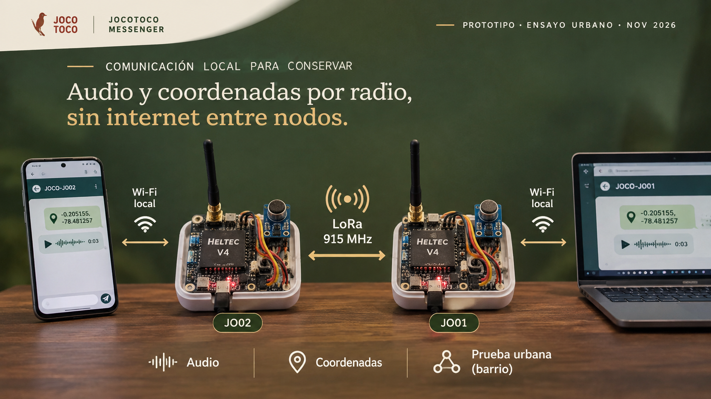

Audio y coordenadas por radio, sin cobertura celular entre nodos.
Pedro GalindoCoordinador de Ciencia, IA y Tecnología AplicadaFundación Jocotoco
Dos ensayos urbanos · noviembre de 2026Dos dispositivos Heltec V4 · Enlace LoRa

Dos ensayos urbanos, todavía no una red de bosque
En dos ensayos urbanos demostramos el envío de información entre dos dispositivos sin depender de internet ni cobertura celular para el enlace de radio.
Etapa: prototipo validado en entorno urbano
01 · RESULTADOS
Lo que demostramos
Dos recorridos urbanos cotejados mediante evidencia recuperada de JO01 y JO02.
17/17Audios coincidentes17 grabaciones con contenido Codec2 idéntico en ambos extremos
9Ubicaciones enviadasCoordenadas geográficas reales enviadas como mensajes
7En los dos historialesSiete mensajes de ubicación conservados en ambos nodos
2Ensayos urbanosUna misma tecnología probada en dos recorridos
Un pequeño prototipo ya consigue transportar algo valioso: una voz y una ubicación a través de un enlace de radio local.
02 · CONEXIÓN
Una conexión sencilla
Del teléfono a la radio, y de la radio a una computadora. El internet no participa en el tramo LoRa.
▣CelularInterfaz Jocotoco
→
◉JO02Nodo emisor
⇢
◉JO01Nodo receptor
→
▤ComputadoraEscucha y consulta
Wi-Fi · Wi-Fi local en cada extremo915 MHz · LoRa · 915 MHz · entre nodos
03 · EVIDENCIA REAL
La conversación, vista desde ambos nodos
La interfaz original de Jocotoco Messenger, reconstruida con las coordenadas y los audios efectivamente recuperados.
⌁
JO02Historial recuperado · consulta
⋮
◉ JO01Nodo receptorARCHIVO
Mensajes históricos · solo lectura◉
LoRa↔915 MHz
⌁
JO01Historial recuperado · consulta
⋮
◉ JO02Nodo emisorARCHIVO
Mensajes históricos · solo lectura◉
———
Los audios corresponden a la misma sesión del ensayo según el registro de JO02; las horas se recuperaron de los registros (relojes no sincronizados) y no existe una asociación individual demostrada entre cada voz y cada coordenada. Reproducción real, sin sonidos sintetizados ni transmisión en vivo.
04 · GEOGRAFÍA
Dos ensayos en un solo mapa
Ubicaciones transmitidas por texto y anillos de distancia desde cada receptor. No son curvas de señal ni zonas de cobertura.
⌖
Ensayo 1 · primer recorridoJO01: −0.2050142744, −78.4813947664
Mapa interactivo Folium · ESRI, OpenStreetMap y radios en metrosAbrir mapa completo ↗
Verde: coordenada presente en ambos dispositivos. Ocre: solo en JO02. Los anillos coloreados representan distancias geodésicas desde JO01, no calidad de señal ni cobertura. Las imágenes base ESRI y OSM requieren internet.
Distancias desde cada receptorCálculo geodésico WGS84 · fuente: mensajes reales
05 · PROYECCIÓN
De la idea a una capacidad real
El valor del prototipo está en integrar componentes, desarrollar el software y verificar el resultado en ambos extremos.
01 / HARDWARE
Integración propia
Dos Heltec V4, micrófono digital, conexión local con teléfono y PC, e interfaz de mensajería Jocotoco.
02 / SOFTWARE
Audio por radio
Compresión de voz, división en paquetes, transmisión LoRa y reconstrucción de archivos escuchables en el receptor.
03 / VALIDACIÓN
Evidencia comprobable
Extracción independiente desde ambos nodos, cotejo de 17 grabaciones y recuperación de los mensajes espaciales.
El siguiente paso es probarlo en condiciones de conservación
Evaluar alcance, consumo de energía, estabilidad, retransmisión y utilidad operativa en un entorno de bosque. Este ensayo urbano no demuestra todavía cobertura forestal.
Siguiente fase · evaluación en terreno
Nota de lectura: los 17 audios se cotejaron mediante la huella SHA-256 del contenido Codec2. Dos ubicaciones no aparecen en el historial conservado de JO01; esto no demuestra que nunca fueran recibidas. Los acuses y la recepción tampoco deben confundirse.